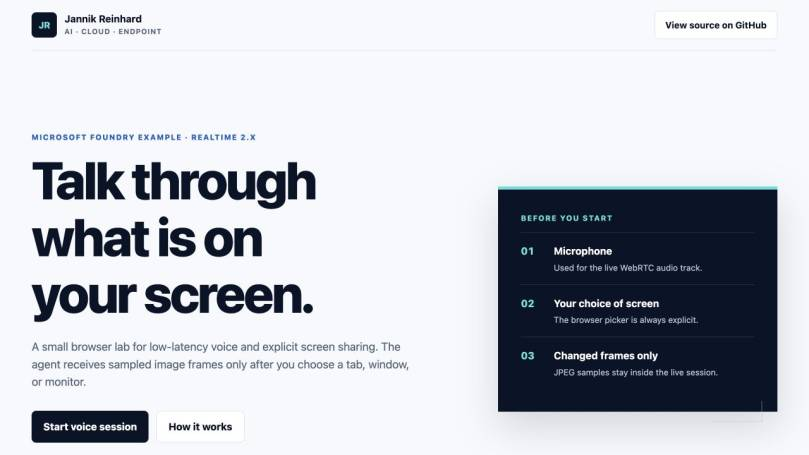
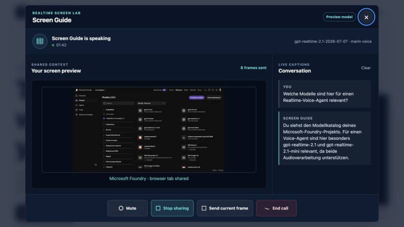
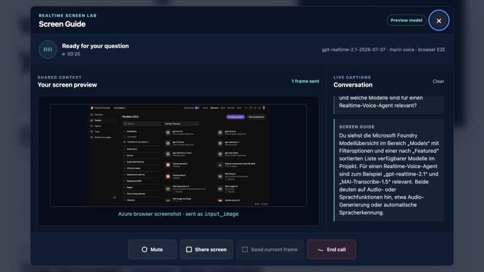
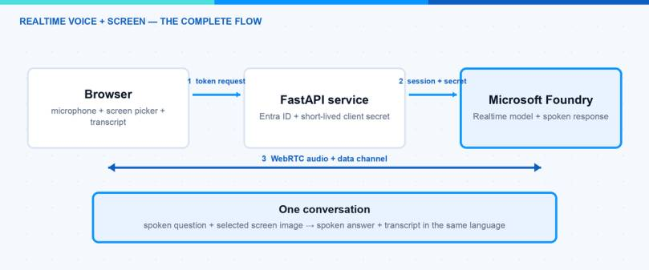
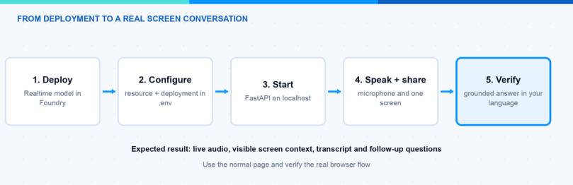

In this blog post I explain how I use a Microsoft Foundry Realtime voice agent to talk about information that is currently visible on my screen. I share an Azure page, ask a question with my voice, and receive a spoken answer without copying text into a chat.
The useful part is the combination of both inputs. The agent can hear my question and see the screen I selected. I can then ask a follow-up question in the same conversation. The complete example is available in my Microsoft Foundry examples repository.

What can the agent do with live screen information?
A normal voice agent only knows what I say. A screen-aware voice agent also gets the information I choose to show at that moment.
For example, I can open the Microsoft Foundry model catalog and ask:
Which of the visible models could I use for a voice scenario?
The agent can answer from the current page. I do not need to read model names aloud or paste a screenshot into another tool. If the first answer is too broad, I can continue with:
Which one would you choose for a browser application?
The second question keeps the context from the current conversation. This makes the experience feel closer to asking a colleague who is looking at the same screen.
This pattern is useful for more than a model catalog. I can use it with an Azure configuration page, a dashboard, a setup wizard, an error message, or documentation that is difficult to understand.
How do I deploy and configure the example?
Before I can start the voice conversation, I need a Microsoft Foundry resource and a Realtime model deployment. I can create the model deployment directly from the Foundry portal.
- Open the Microsoft Foundry project.
- Select Build and open Models.
- Select Deploy a base model.
- Search for a supported GPT Realtime model that is available in the project region.
- Enter a clear deployment name and select the available deployment type and capacity.
- Start the deployment and wait until its status is Succeeded.
The local example requires Python 3.11 or later and the Azure CLI. The identity used with az login needs the Cognitive Services User role on the Foundry resource.
Hint: Subscription Owner or Contributor does not automatically include model data access. If the voice session cannot be created, I check the Cognitive Services User assignment first. New role assignments can need a few minutes before they work.
Next, I clone the example and create its local configuration:
I enter the Foundry resource name and the model deployment name in .env:
AZURE_OPENAI_RESOURCE is only the resource name, not a URL. The server creates the GA endpoint from this value. The Azure credential also stays on the server. The browser never receives the Azure CLI token or a long-lived API key.
I then install the small FastAPI application and start it locally:
The page is now available at http://127.0.0.1:8000. When I host it outside localhost, I must use HTTPS because browsers require a secure context for microphone and screen access.
Microsoft lists the current prerequisites and supported deployment flow in the official Realtime WebRTC guide.
How do I use the voice agent?
The user flow is intentionally short. I do not need to upload a file or prepare a special prompt.
1 — Start the voice conversation
I click Start voice session and allow microphone access. The call dialog shows when the connection is ready. I can speak normally instead of holding a record button for every question.
The agent answers with audio. The spoken question and answer also appear as text in the transcript. This is helpful when I want to verify a product name, command, or setting while listening.
2 — Share the current screen only when I need help
I open the page I want to discuss and click Share screen. The browser shows its normal selection dialog. I can choose one tab, one window, or a complete monitor.
The selected surface remains visible in the call. This is important because I always know what the agent can currently see. I can stop sharing at any time before I open another page with sensitive information.

In the screenshot I shared the Microsoft Foundry model catalog. The agent received the visible page as image context. It did not receive control of my browser and it could not click anything for me.
3 — Ask naturally and continue the conversation
Now I can ask the same questions I would ask a colleague:
- What am I looking at?
- Which option is relevant for my scenario?
- What should I configure next?
- Can you explain this error in simple words?
- What is the difference between the two visible models?
I do not need to describe every label on the page. The screen provides that context. My voice provides the intention behind the question.
I also configured the agent to answer in the language of my latest spoken question. When I ask in German, the answer is German. If I switch to English, the next answer follows in English. This makes the same page useful for different users without a separate language selector.
What came back from the Azure screen?
I used the experience with the Microsoft Foundry model overview. My German question asked which visible models were relevant for a Realtime voice agent.
The agent answered:
Du siehst die Microsoft Foundry Modellübersicht im Bereich „Models“ mit Filteroptionen und einer nach „Featured“ sortierten Liste verfügbarer Modelle im Projekt. Für einen Realtime-Voice-Agent sind zum Beispiel „gpt-realtime-2.1“ und „MAI-Transcribe-1.5“ relevant.
The answer referred to information on the shared page. It identified the model overview, the filters, and visible model names. More importantly, the response came back as speech and text. I could immediately ask why one of these models would fit my scenario.

This is the experience I wanted to build. I keep my hands on the current task, ask a short question, and get an answer that uses the information in front of me.
Why is voice useful here?
Text chat is still the better option when I need a long command or want to compare a large amount of text. Voice is useful when I am already working inside another application.
| Situation | Why voice and screen context help |
|---|---|
| Azure configuration | I can ask about the visible options without leaving the page |
| Error message | I can ask for an explanation while keeping the error open |
| Dashboard | I can discuss the current chart or status without describing every value |
| Guided setup | I can ask what the next step is while I complete the wizard |
| Training | A user can ask questions about the exact screen used in the demonstration |
The agent becomes a second layer over the current application. It does not replace the application. It helps me understand what I am seeing and decide what to do next.
What does “live” mean in this example?
The conversation is live because audio moves in both directions with low delay. The agent can also receive updated screen images while I continue speaking. Microsoft documents WebRTC as the browser connection for Realtime audio and supports image input inside the same conversation.
You can find the underlying capabilities in the official WebRTC guide and the Realtime audio documentation.
However, the agent does not automatically know everything that changes in Azure. It only knows the screen information I share and the conversation we have. If I need live tenant data that is not visible on the page, I must connect a separate tool or API.
This distinction is important:
- Visible live information: The current page, status, chart, error, or options I share.
- Conversation context: My spoken questions and the earlier answers in the call.
- Connected business data: Only available when I deliberately add an API, MCP server, or another tool.
The screen is therefore context, not unrestricted access to the environment.
How does the complete flow work?
The application has a browser part, a small FastAPI service, and the Realtime model in Microsoft Foundry. Each part has one clear responsibility.
- The browser calls the local token endpoint when I start the voice session.
- The FastAPI service authenticates to Azure with Microsoft Entra ID.
- The service creates a short-lived Realtime client secret for the selected deployment.
- The browser uses this secret to open a WebRTC connection directly to the Realtime service.
- My microphone audio and the spoken response use this live connection.
- Transcripts, status events, and selected screen images use the WebRTC data channel.

In the diagram you can see the complete path. FastAPI is only needed to create the short-lived session. After that, audio and screen context move directly between the browser and Microsoft Foundry.
The browser manages the microphone and screen permissions. The standard browser picker lets me decide what I want to share. The selected screen stays visible in the call dialog.
The application does not send a permanent screen video to the model. It creates selected still images from the shared surface and adds them to the same conversation as input_image items. The model therefore receives my spoken question together with the current visual context. Its response returns as audio and as a transcript.
The session instructions tell the agent to use only the explicitly shared screen and answer in the language of my latest spoken question. This is why I can ask a German question, receive a German answer, and continue in English without starting another call.
The Azure credential remains inside the FastAPI service. The browser only sees the short-lived Realtime client secret. This is the same principle I use for other browser applications: a permanent Azure credential does not belong inside the page.
If Microsoft Foundry is new for you, my first Microsoft Foundry agent guide explains the basic project setup. My article about secure Microsoft Foundry deployments covers the identity and data boundaries in more detail.
What did I deliberately keep out of the example?
I wanted a small example that is easy to understand and troubleshoot. I therefore kept several production features out of the lab on purpose.
The example has:
- No browser automation or control of the shared page
- No permanent Azure credential in the browser
- No hidden screen capture without the browser picker
- No storage for screen images or transcripts
- No Microsoft Graph or Microsoft Intune write permissions
- No user database or public sign-in flow
This keeps the flow clear. The page opens a Realtime session, sends explicitly selected visual context, and returns speech plus a transcript. Nothing else happens in the background.
Note: If I host this example for other users, I would add authentication, rate limiting, audit events, and a clear retention configuration around the token endpoint. These are hosting tasks and not required for the local lab.
How can I test the complete flow myself?
The complete example is available here:
github.com/JayRHa/microsoft-foundry-examples/tree/main/examples/realtime-voice-screen-share
After the local server is running, I test the real user flow in the browser. I do not need an automated test mode for this.

The visual shows the five practical steps. I deploy the model, configure the local service, start the page, speak and share one screen, and then verify the grounded answer.
- Open
http://127.0.0.1:8000. - Select Start voice session and allow microphone access.
- Wait until the call state shows that the connection is ready.
- Say a short question. I should hear the answer and see both sides in the transcript.
- Select Share screen and choose one non-sensitive Azure or browser tab.
- Ask: “What can you see on my screen?” The answer should mention information visible on the page.
- Ask a follow-up question without repeating the page context.
- Ask the next question in German. The spoken answer and transcript should switch to German.
- Stop sharing from the call dialog. The preview should stop and no new screen context should be sent.
I use this small result checklist:
| Check | Expected result |
|---|---|
| Voice connection | I can speak and hear the agent without pressing a record button |
| Transcript | My question and the agent response appear as text |
| Screen grounding | The answer refers to visible labels, values, or model names |
| Follow-up | The agent remembers the context from the current conversation |
| Language | A German question receives a German spoken answer |
| Stop sharing | The visible preview ends and the screen is no longer updated |
For my first conversation, I would use a page that contains clear but non-sensitive information. A Microsoft Foundry catalog, a public dashboard, or public documentation works well. This makes it easy to check whether the answer refers to the visible content.
The important result is not another voice chatbot. It is a conversation about the work already open on my screen. Speech makes the interaction fast. The shared page gives the agent the missing context. Together, both inputs make the answer much more useful.
I hope this is a little help for your own Microsoft Foundry project.
Stay healthy, Cheers Jannik